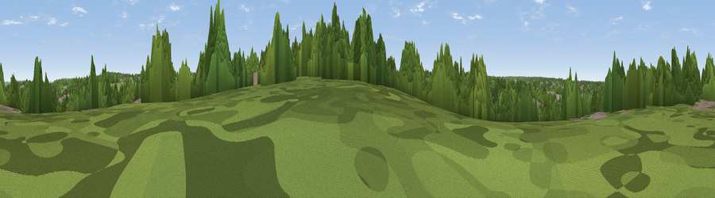

Viewpoint near Old Coulsdon
#43360 in England · top 73% of its area beats it · near Old CoulsdonThe view, rendered

A 360° render of this exact spot computed from the terrain model, tree cover and land cover — summer colours, afternoon light, calibrated against photographs of famous viewpoints. Real trees, hedges and buildings will differ in detail.
The panorama
Grey silhouette: terrain skyline in each direction (720 bearings, Earth curvature and refraction included). Dashed green: skyline with trees (+15 m) and buildings (+8 m) as obstacles. Blue strip: how far the ground is visible on each bearing.
Where the view opens
Wedge length = distance to the farthest visible ground on that bearing (vegetation-aware). Rings at 10, 25 and 50 km.
What fills the view
65% woodland · 20% grassland · 14% built-up
Angular shares of the visible panorama (visual magnitude), not map area. Landscape diversity 0.39 (0–1 Shannon).
Key numbers
More beautiful places nearby
The staircase of upgrades: each row has a higher view potential than everything closer. Driving times are estimates from straight-line distance, calibrated against real road routing — check an actual route before setting out.
| Place | Direction | Drive | Score |
|---|---|---|---|
| Viewpoint near Croydon | NNE · 4 km | ~9 min | 42.5 |
| Viewpoint near Croydon | NNE · 5 km | ~11 min | 50.1 |
| Viewpoint near Chaldon | S · 6 km | ~12 min | 66.7 |
| Viewpoint near Caterham Valley | S · 7 km | ~14 min | 68.0 |
| Box Hill | SW · 14 km | ~25 min | 70.4 |
| Viewpoint near Box Hill Village | SW · 14 km | ~26 min | 71.0 |
| Viewpoint near Coldharbour | SW · 24 km | ~39 min | 71.3 |
| Wolstonbury Hill | S · 46 km | ~67 min | 79.6 |
51.32275, -0.11170 · source: screening · position refined by local search. Computed location — check access rights before visiting.